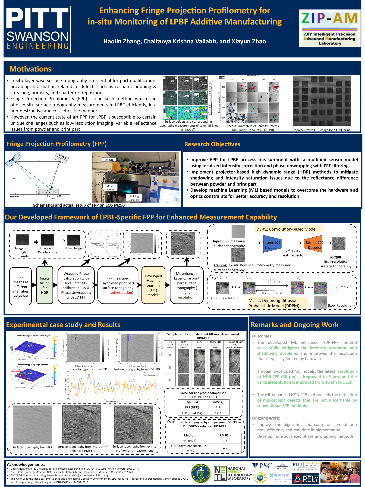

在匹兹堡大学 ANSYS 增材制造实验室项目中，开展复现验证与参数优化，涉及多强度投影图像融合、局部强度校准、FFT 滤波与相位解包裹，以及已有 DDPM 等模型的复现。
相关工具与方法：HDR 成像、FPP、FFT、DDPM、表面形貌重建。
2024.08 - 2025.04 · 复现验证与参数优化
利用条纹投影轮廓术测量逐层表面形貌，结合 HDR 成像与机器学习，改善金属粉末和成形件反射差异带来的测量问题。
在匹兹堡大学 ANSYS 增材制造实验室项目中，开展复现验证与参数优化，涉及多强度投影图像融合、局部强度校准、FFT 滤波与相位解包裹，以及已有 DDPM 等模型的复现。
相关工具与方法：HDR 成像、FPP、FFT、DDPM、表面形貌重建。
传统 FPP 用于 LPBF 时，会受到成像分辨率、粉末与成形件反射率差异、强度饱和及阴影的影响。海报介绍了面向这些问题的测量框架。
| 指标 | 原始测量 | 增强后 |
|---|---|---|
| 横向分辨率 | 38 μm | 5 μm |
| 纵向分辨率 | 10 μm | 1 μm |
海报报告该方法可改善微小缺陷的识别能力，并将计算效率与更先进的相位解包裹方法列为后续研究方向。
原海报作者：Haolin Zhang、Chaitanya Krishna Vallabh、Xiayun Zhao。
以下展示课题组研究海报，作为项目技术背景与结果参考。我的项目角色为复现验证与参数优化。
